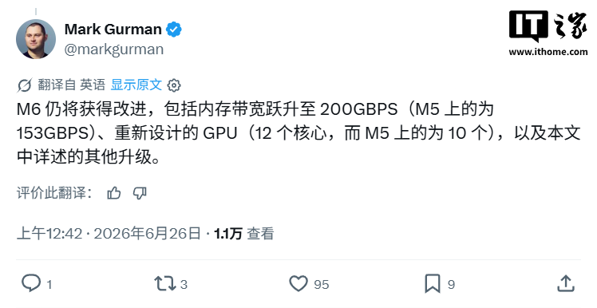
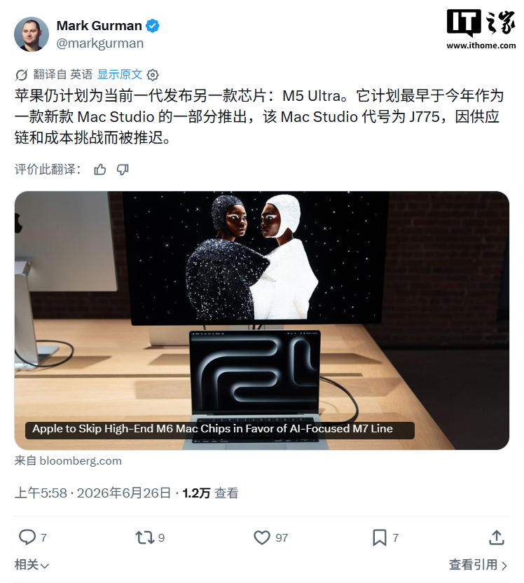
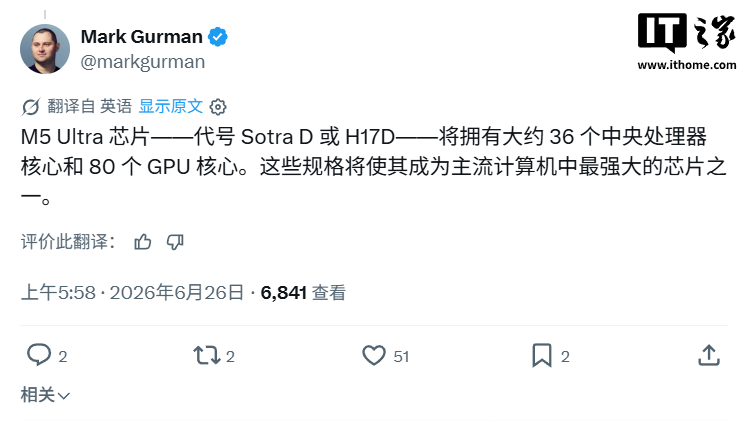
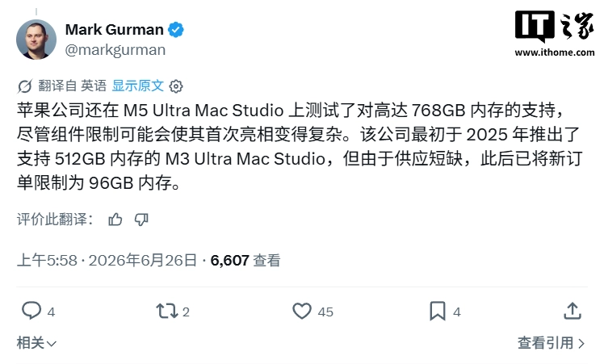
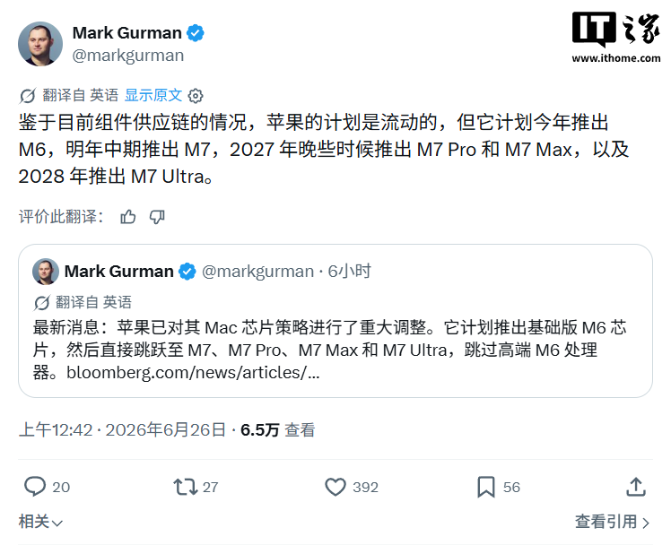

M6 시리즈 계획
Bloomberg의 Mark Gurman이 최신 Power On 통신 브리핑을 통해 Apple이 M6 및 M7 시리즈 칩 계획을 조정할 예정이라고 밝혔습니다. Apple은 M6 Pro와 M6 Max를 건너뛰고, AI 연산에 더 중점을 둔 M7 시리즈 칩에 개발 역량을 집중할 계획입니다.
보고에 따르면 Apple은 2026년 후반 신형 MacBook Pro와 함께 M6 칩을 출시할 예정이며, 이 세대는 Pro 및 Max 버전 없이 M6 표준 버전만 제공될 예정입니다.
M6 사양
사양 측면에서 M6 표준 버전의 메모리 대역폭은 200GB/s로 향상되며(M5 표준 버전은 153GB/s), Apple은 새로운 메모리 구조를 도입하고 Neural Engine을 업그레이드할 계획입니다.
현재 내부 테스트 중인 여러 M6 표준 버전 샘플은 12코어 GPU(M5 표준 버전은 10코어) 설계를 채택하여 인공지능 및 그래픽 작업에서 더 강력한 성능을 발휘할 것으로 예상됩니다.
M5 Ultra 및 기존 모델
Apple은 M6 Pro와 M6 Max를 출시하지 않지만, M5 Ultra 칩은 여전히 준비 중입니다. 이 칩은 약 36코어 CPU와 80코어 GPU를 탑재할 것으로 예상되며, 신형 Mac Studio와 함께 등장할 가능성이 높습니다.
현재의 Mac Studio는 두 가지 구성을 제공하며, 각각 M4 Max의 14코어 CPU 및 32코어 GPU, 그리고 M3 Ultra의 28코어 CPU 및 60코어 GPU를 탑재하고 있습니다.
M7 시리즈 및 출시 일정
Apple은 칩 개발의 중점을 M7 시리즈로 옮겼으며, M6 표준 버전과 M7 사이의 출시 간격이 1년 미만일 것으로 예상됩니다.
Gurman은 Apple이 가장 빨리 2027년 초에 M7 표준 버전을 출시하고, 2027년 말까지 M7 Pro, M7 Max 및 M7 Ultra 버전을 출시할 것으로 예측했습니다. 또한 2028년에는 M7 Ultra 칩을 선보일 예정입니다.
M7 성능 및 목표
전략적 측면에서 Apple은 로컬 AI 처리 능력을 강화하는 데 중점을 두고 있으며, M7 표준 버전의 메모리 대역폭은 약 240GB/s까지 더욱 향상될 것으로 알려졌습니다.
총평
Apple은 AI 연산 성능 강화를 위해 M6 시리즈를 간소화하고 M7 시리즈에 개발 역량을 집중할 계획입니다. 특히 M7 시리즈는 로컬 AI 처리 능력 강화와 높은 메모리 대역폭 확보를 핵심 목표로 하고 있습니다.
M6 系列芯片规划
根据 Mark Gurman 的爆料，Apple 计划调整 M6 和 M7 系列的路线图。为了将研发重心转向更侧重 AI 计算的 M7 系列，Apple 将跳过 M6 Pro 和 M6 Max 版本。预计 2026 年晚些时候随新款 MacBook Pro 推出的 M6 芯片仅提供标准版。
M6 标准版核心规格
- 内存带宽：提升至 200GB/s（M5 标准版为 153GB/s）。
- GPU 配置：采用 12 核 GPU 设计（M5 标准版为 10 核），旨在增强人工智能和图形任务表现。
- 架构升级：引入新的内存架构并升级 Neural Engine。
M5 Ultra 与 Mac Studio 情况
尽管跳过 M6 的高阶型号，Apple 仍在研发 M5 Ultra 芯片。该芯片预计拥有约 36 核 CPU 和 80 核 GPU，有望随新款 Mac Studio 登场。
目前 Mac Studio 提供两种配置：M4 Max（14 核 CPU、32 核 GPU）以及 M3 Ultra（28 核 CPU、60 核 GPU）。
M7 系列路线图与 AI 布局
Apple 已将研发重心向 M7 系列倾斜，旨在强化本地 AI 处理能力。由于 M7 的核心定位是 AI，其发布节奏可能比 M6 标准版更紧凑。
- M7 标准版：预计最早于 2027 年初推出，内存带宽预计升至约 240GB/s。
- M7 Pro 与 M7 Max：预计在 2027 年底前推出。
- M7 Ultra：预计于 2028 年推出。
总结
Apple 将跳过 M6 Pro 和 M6 Max，转而将研发重心投入到更强调 AI 能力的 M7 系列芯片中。M6 标准版将于 2026 年发布并提供显著的带宽和 GPU 提升，而 M7 系列则计划在 2027 年至 2028 年间逐步推出全系列型号以强化本地 AI 处理能力。
M6シリーズの計画
BloombergのMark Gurman氏が、AppleがM6およびM7シリーズのチップ計画を調整する見通しであることを報じました。AppleはM6 ProおよびM6 Maxをスキップし、AI演算により重点を置いたM7シリーズへの開発リソースの集中を計画しています。
報告によると、Appleは2026年後半に新型MacBook ProとともにM6チップをリリースする予定であり、この世代ではProおよびMaxバージョンを除いたM6標準版のみが提供される見込みです。
M6の仕様
仕様面において、M6標準版のメモリ帯域幅は200GB/sに向上し（M5標準版は153GB/s）、Appleは新しいメモリ構造の導入とNeural Engineのアップグレードを計画しています。
現在内部テスト中の複数のM6標準版サンプルは、12コアGPU（M5標準版は10コア）設計を採用しており、AIおよびグラフィックス作業においてより強力なパフォーマンスを発揮すると予想されます。
M5 Ultraおよび既存モデル
AppleはM6 ProおよびM6 Maxをリリースしませんが、M5 Ultraチップの準備は継続されています。このチップは約36コアのCPUと80コアのGPUを搭載する見込みで、新型Mac Studioとともに登場する可能性が高いです。
現在のMac Studioは2つの構成を提供しており、それぞれM4 Max（14コアCPU、32コアGPU）およびM3 Ultra（28コアCPU、60コアGPU）を搭載しています。
M7シリーズとリリーススケジュール
Appleはチップ開発の焦点をM7シリーズに移しており、M6標準版とM7のリリース間隔は1年未満になると予想されています。
Gurman氏は、Appleが最も早く2027年初頭にM7標準版を発売し、2027年末までにM7 Pro、M7 Max、およびM7 Ultraバージョンをリリースすると予測しています。また、2028年にはM7 Ultraチップが登場する予定です。
M7の性能と目標
戦略的な側面として、AppleはローカルAI処理能力の強化に注力しており、M7標準版のメモリ帯域幅は約240GB/sまでさらに向上する見込みです。
まとめ
AppleはAI演算性能の強化に向けた戦略として、M6シリーズを簡素化し、次世代のM7シリーズへ開発リソースを集中させる計画です。特にM7シリーズでは、ローカルでのAI処理能力の向上と高いメモリ帯域幅の確保が主要な目標となっています。
M6 Series Plans
Mark Gurman of Bloomberg reported via a Power On briefing that Apple plans to adjust its roadmap for the M6 and M7 series chips. The company intends to skip the M6 Pro and M6 Max models, instead concentrating development resources on the M7 series, which will place a heavier emphasis on AI computing.
According to reports, Apple is expected to release the M6 chip in late 2026 alongside a new MacBook Pro. This generation is planned to offer only the standard M6 version, excluding Pro and Max variants.
M6 Specifications
In terms of specifications, the memory bandwidth for the M6 standard version will increase to 200GB/s (compared to 153GB/s for the M5 standard). Additionally, Apple plans to introduce a new memory architecture and an upgraded Neural Engine.
Several M6 standard samples currently undergoing internal testing feature a 12-core GPU design (compared to the 10-core GPU in the M5 standard), which is expected to deliver stronger performance in AI and graphics tasks.
- M6 Standard: 12-core GPU
- M5 Standard: 10-core GPU
M5 Ultra and Existing Models
While Apple will skip the M6 Pro and M6 Max, the M5 Ultra chip remains under development. This chip is expected to feature approximately a 36-core CPU and an 80-core GPU, likely debuting with a new Mac Studio.
The current Mac Studio models offer two configurations:
- M4 Max: 14-core CPU and 32-core GPU
- M3 Ultra: 28-core CPU and 60-core GPU
M7 Series and Release Schedule
Apple has shifted its development focus toward the M7 series, with a release gap of less than one year between the M6 standard version and the M7. Gurman predicts the following timeline:
- Early 2027: M7 standard version
- Late 2027: M7 Pro, M7 Max, and M7 Ultra versions
- 2028: Introduction of the M7 Ultra chip
M7 Performance and Goals
From a strategic standpoint, Apple is focusing on enhancing local AI processing capabilities. The memory bandwidth for the M7 standard version is expected to increase further to approximately 240GB/s.
Summary
Apple plans to streamline its roadmap by skipping the M6 Pro and Max models to focus development resources on the M7 series, which targets enhanced AI performance. The M7 series will prioritize local AI processing capabilities and significantly higher memory bandwidth.





